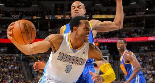

Andre Iguodala, Lawson y Faried dan confianza a los Nuggets
NUGGETS 107-WARRIORS 100 (2-3)

El triunfo mantuvo con vida a los Nuggets en la serie al mejor de siete que dominan los Warriors por 3-2 y el sexto se jugará el jueves en el ORACLE Arena, de Oakland.
Iguodala consiguió un doble-doble de 25 puntos, 12 rebotes, incluidos nueve que fueron defensivos, siete asistencias, recuperó dos balones y puso un tapón.
Junto a Iguodala, el base Ty Lawson se encargó de dirigir el juego de los Nuggets y además, esta vez, impidió que Stephen Curry fuese clave en los Warriors al cortarles su ataque de transición.
Lawson también aportó cifras dobles al anotar 19 puntos y repartir 10 asistencias, capturar tres rebotes y recuperar dos balones.
Mientras que el ala-pívot Kenneth Faried se encargó de dominar las acciones bajo los aros y en la pintura. Consiguió 13 puntos, 10 rebotes, recuperó dos balones y puso un tapón.
Faried, que anuló al pívot australiano Andrew Bogut, también fue el que puso la energía y permitió a los Nuggets recuperar su mejor juego defensivo que le ayudaron a mantenerse dentro de la competición y tener la oportunidad de conseguir empatar la eliminatoria.